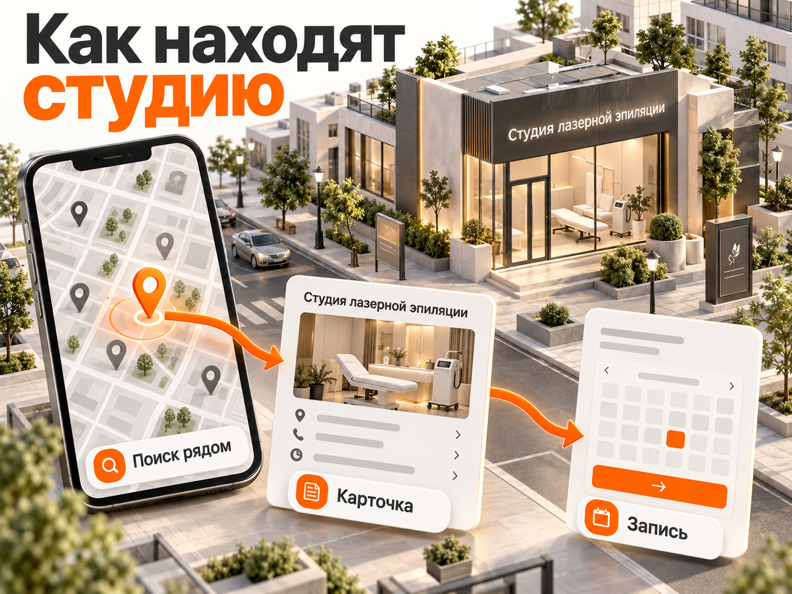
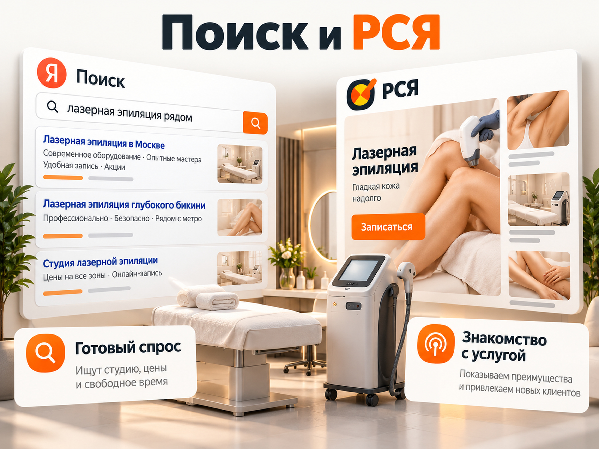
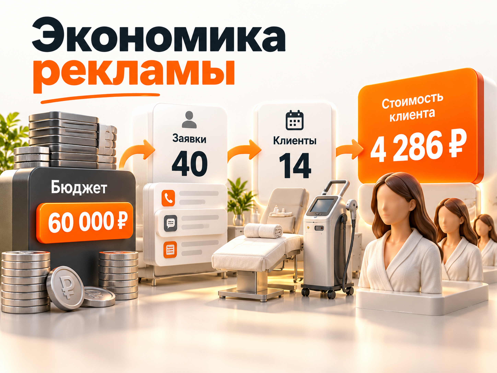

Блог о платном трафике
Продвижение лазерной эпиляции в 2026 году: как привлекать клиентов и сколько стоит реклама
Для продвижения студии лазерной эпиляции в 2026 году разумно использовать три основных направления: Яндекс Карты для локального спроса, Яндекс Директ для получения заявок и работу с существующей клиентской базой для повторных записей. Дополнительно можно тестировать VK Рекламу, 2ГИС и другие площадки.
В российских кейсах 2026 года стоимость обращения на лазерную эпиляцию составляла от 474 до 2 221 ₽ в зависимости от проекта и рекламного канала. Это не среднерыночный диапазон, а результаты отдельных кампаний. При этом заявку нельзя приравнивать к посещению студии.
Для предварительного расчёта рассмотрим рекламный бюджет 60 000 ₽ в месяц. При условной стоимости обращения 1 500 ₽ можно получить 40 заявок. Если 35% заявителей действительно придут на процедуру, получится 14 новых клиентов, а стоимость привлечения одного посетителя составит примерно 4 286 ₽. Это расчётный сценарий, а не обещание результата.
Особенности продвижения студии лазерной эпиляции
Главная особенность бизнеса лазерной эпиляции заключается в повторных посещениях. Клиент может начать с одной зоны, затем записаться на другие процедуры или продолжить курс. Поэтому рекламная экономика зависит не только от первого визита, но и от последующих оплат.
При выборе студии потенциальный клиент обычно оценивает несколько факторов:
- Удобство расположения рядом с домом, работой или метро.
- Стоимость конкретной зоны и условия акций.
- Тип лазера, оборудование и квалификацию специалиста.
- Отзывы, фотографии помещения и доверие к организации.
- Возможность быстро записаться на удобное время.
Для рекламы важно разделять аудиторию с уже сформированным спросом и тех, кто пока только рассматривает процедуру. Первые ищут студию, цены и свободное время. Вторые сравнивают оборудование, изучают отзывы и могут откладывать запись.
Именно поэтому одинаковые объявления и предложения для всех пользователей обычно уступают рекламе, учитывающей этап принятия решения.
Продвижение лазерной эпиляции на Яндекс Картах
Яндекс Карты стоит рассматривать как один из приоритетных каналов привлечения клиентов в студию лазерной эпиляции. Услуга привязана к конкретному адресу, а удобное расположение имеет особое значение при повторных посещениях.

Клиент может искать «лазерная эпиляция рядом», «лазерная эпиляция у метро» или студию в определённом районе. В результатах он видит организации, цены, фотографии, рейтинги и отзывы, зачастую ещё до перехода на сайт.
Продвижение в Картах состоит из двух разных задач: улучшения бесплатной карточки организации и платного увеличения её видимости.
Как правильно оформить карточку в Яндекс Бизнесе
Для начала нужно создать или подтвердить карточку организации в Яндекс Бизнесе. Добавление компании бесплатно.
1. Название и категория. Укажите настоящее название студии и соответствующий деятельности вид организации. Не нужно добавлять в название искусственные ключевые фразы с городом и обещаниями низких цен.
2. Услуги и цены. Заполните прайс с отдельными позициями для популярных процедур: лазерная эпиляция подмышек, глубокого бикини, ног, лица, комплексных зон. Указывайте реальные цены и условия предложения.
3. Фотографии. Покажите помещение, зону ожидания, кабинет, оборудование и сотрудников. Фотографии должны отражать действительное состояние студии.
4. Запись и контакты. Проверьте телефон, график работы, адрес, ссылку на сайт и доступность онлайн-записи. Чем меньше действий требуется человеку для обращения, тем ниже риск потерять потенциального клиента.
5. Отзывы. Предлагайте реальным посетителям делиться впечатлениями, отвечайте на вопросы и негативные комментарии. Не используйте накрутку отзывов или вознаграждение за положительную оценку.
6. Актуальность данных. Обновляйте расписание, прайс, фотографии, сведения об оборудовании и акции при фактических изменениях.
Не стоит оценивать карточку только по её месту в выдаче: результаты Яндекс Карт зависят в том числе от расположения пользователя и соответствия организации запросу.
Для студии важнее получать больше реальных обращений и записей из своего района, чем демонстрировать красивую позицию по одному запросу.
Платное продвижение на Яндекс Картах
Яндекс Бизнес предлагает рекламную подписку, а также форматы приоритетного и брендированного размещения. Доступность отдельных продуктов зависит от типа организации и условий размещения.
Рекламная подписка может распределять показы между Картами, Поиском и другими площадками Яндекса. Специализированные форматы продвижения в Картах позволяют выделять организацию и повышать её заметность среди похожих компаний.
Это не гарантирует первое место в выдаче или определённое количество клиентов.
Перед подключением платного размещения необходимо определить:
- Сколько стоит реклама и какие площадки будут использоваться.
- Какие действия относятся к результатам кампании.
- Можно ли отдельно оценивать звонки, обращения и реальные записи.
- Как измерить прирост относительно периода без продвижения.
Особое внимание нужно уделять статистике. В Яндекс Бизнесе к целевым действиям могут относиться построения маршрутов, переходы на сайт, просмотры предложений и другие взаимодействия.
Построенный маршрут не означает, что клиент посетил студию. Клик по телефону не всегда означает состоявшийся разговор, а открытая карточка не равна заявке.
Поэтому эффективность платных Карт следует оценивать по качественным обращениям и подтверждённым посещениям, а не только по числу действий в интерфейсе.
Реальный кейс продвижения студии на Картах
В мае 2026 года агентство GeoLeads опубликовало результаты продвижения московской косметологической студии CHI-CHI, оказывающей в том числе услуги лазерной эпиляции.
За месяц органического продвижения, по информации агентства, были получены следующие результаты:
| Показатель | Результат |
|---|---|
| Нажатия на звонок | 29, рост на 45% |
| Построения маршрутов | 89, рост на 33% |
| Переходы на сайт | 79, рост на 18% |
| Рост переходов в профиль | 131% |
Работа включала оформление карточки, уточнение услуг и повышение видимости организации в локальном поиске.
Однако опубликованные показатели не позволяют определить точное число оплаченных посещений или стоимость привлечения нового клиента.
Вывод: Яндекс Карты способны увеличивать локальные обращения даже без покупки рекламы, но для оценки окупаемости необходима связка со статистикой фактических записей.
Яндекс Директ для лазерной эпиляции: Поиск и РСЯ
Яндекс Директ позволяет работать с двумя типами спроса. На Поиске можно привлекать людей, которые уже выбирают студию. В РСЯ можно знакомить аудиторию с предложением, показывать преимущества и возвращать заинтересованных пользователей.
Запускать оба инструмента следует с учётом доступного бюджета, качества заявок и объёма данных для обучения стратегий.

Реклама лазерной эпиляции на Поиске
Для поисковой рекламы наиболее интересны запросы с выраженным коммерческим намерением:
- «лазерная эпиляция [город] цена»;
- «лазерная эпиляция [район или метро]»;
- «лазерная эпиляция глубокого бикини цена»;
- «лазерная эпиляция подмышек записаться»;
- «александритовая лазерная эпиляция [город]»;
- «студия лазерной эпиляции рядом».
Запросы по конкретным зонам, типам аппаратов и расположению позволяют точнее связать объявление с предложением студии.
Например, человеку, который ищет эпиляцию глубокого бикини, желательно показывать соответствующую услугу с реальной ценой, а не общую рекламу всех косметологических процедур.
При сборе семантики важно отдельно проверить информационные запросы: противопоказания, принцип действия лазера, отзывы об оборудовании, обучение профессии, покупка аппаратов. Часть такого спроса может быть нецелевой для кампании на запись.
Географию следует настраивать с учётом фактической зоны обслуживания. Для студии в большом городе показ рекламы на всю агломерацию может приводить обращения от людей, которым неудобно добираться.
РСЯ: реклама с предложением для первого визита
РСЯ подходит для тестирования предложений, направленных на привлечение новых посетителей.
В июне 2026 года специалист Никита Глушков опубликовал кейс рекламных кампаний по лазерной эпиляции. В нём сообщается о 1 196 заявках по 474 ₽. В качестве основного канала использовалась РСЯ.
В основе подхода находились конкретные предложения на отдельные зоны и комплексы процедур. Вместо демонстрации большого количества акций пользователю предлагалось одно понятное входное предложение.
Это иллюстрирует важный принцип: объявление должно сообщать, какую именно процедуру человек может получить, на каких условиях и как записаться.
При этом цифры кейса нельзя автоматически переносить на другие студии. В публикации нет достаточной информации о фактических оплаченных посещениях, повторных продажах и итоговой окупаемости.
Для РСЯ имеет смысл тестировать предложения по конкретным зонам, пакетные услуги, сведения об оборудовании и удобстве расположения. При подготовке рекламы необходимо соблюдать требования к продвижению косметологических услуг.
Как распределять рекламный бюджет
Для небольшой студии с ограниченным бюджетом не стоит создавать множество отдельных рекламных кампаний под каждую зону и каждую аудиторию.
На старте полезно определить приоритетные услуги и выбрать несколько гипотез, которые действительно можно проверить по количеству обращений и записей.
Если целевых действий мало, чрезмерное дробление кампаний затруднит накопление данных для автоматических стратегий.
Оплату за конверсии также не следует выбирать автоматически. Нужно оценить частоту достижения целей, достаточность бюджета и реальную возможность алгоритма обучаться на качественных событиях.
Первоначальный выбор между Поиском и РСЯ должен зависеть не от предположения, что один канал всегда дешевле, а от стоимости реально привлечённого посетителя.
Сколько стоит заявка на лазерную эпиляцию в 2026 году
Открытые российские кейсы показывают значительный разброс стоимости обращения. Он зависит от города, конкуренции, предложения, рекламного формата и способа подсчёта результата.
Например, агентство «Невский Маркетинг» опубликовало статистику продвижения петербургской Milash Studio за февраль-август 2026 года. Студия оказывает услуги лазерной эпиляции, LPG-массажа и аппаратной коррекции фигуры.
За семь месяцев реклама принесла 163 обращения при средней стоимости 1 316 ₽.
В отдельном сравнении каналов за 10 недель с конца июля агентство привело следующие значения:
| Рекламный канал | Стоимость обращения |
|---|---|
| Яндекс Карты | 629 ₽ |
| РСЯ | 1 022 ₽ |
| Поиск Яндекса | 2 221 ₽ |
Это показатели одного проекта за конкретный период, а не универсальные тарифы рекламных систем.
Более дешёвое обращение с Карт не доказывает, что они будут выгоднее Поиска по количеству фактически пришедших клиентов. Для сравнения нужны данные о качестве каждого обращения.
При этом кейс показывает, почему локальному бизнесу полезно анализировать геосервисы отдельно, а не объединять всю активность Яндекса в один показатель.
Другие каналы привлечения клиентов
VK Реклама
VK Реклама может использоваться для продвижения студий лазерной эпиляции через конкретные предложения, изображения и видеоматериалы.
В кейсе Никиты Глушкова, опубликованном в июне 2026 года, студия в Саранске получила 285 заявок в сообщения сообщества при расходе 134 929 ₽. Средняя стоимость обращения составила примерно 473 ₽.
В кампании использовались предложения для отдельных зон и комплексов процедур. Трафик направлялся в переписку, где потенциальным клиентам помогали выбрать услугу и записаться.
Результат подтверждает возможность получать обращения через VK Рекламу, но не содержит достаточных данных для оценки стоимости фактического посетителя.
Для студии с активным сообществом и администратором, который быстро отвечает на сообщения, этот канал можно включать в последующие рекламные тесты.
Авито
Авито представляет интерес как дополнительная площадка для продвижения локальных услуг, особенно когда пользователь сравнивает предложения по стоимости и расположению.
Для проверки спроса студия может использовать карточку услуги с реальными фотографиями, адресом, перечнем зон и понятными условиями записи, если такое размещение соответствует действующим правилам Авито.
Но в изученных публикациях за октябрь 2025 - октябрь 2026 года не найдено достаточно подробного российского кейса, позволяющего надёжно оценить стоимость оплаченного посещения обычной студии лазерной эпиляции именно с Авито.
Опубликованный в 2026 году кейс с 362 заявками по 434 ₽ относится к продаже франшизы студий, а не услуг лазерной эпиляции конечным клиентам. Переносить эту стоимость заявки на рекламу процедур некорректно.
Поэтому Авито следует считать экспериментальным каналом, а не обязательной статьёй рекламного бюджета.
Telegram
Telegram может выполнять функцию коммуникационного канала: информировать существующих клиентов, отвечать на вопросы, сообщать о свободных окнах и поддерживать повторные записи при наличии соответствующего согласия.
Но для платных размещений в Telegram в России в 2026 году существует отдельный юридический риск. Согласно разъяснениям ФАС России от 25 марта 2026 года, переходный период до конца 2026 года в части применения мер ответственности не отменяет ограничений законодательства.
Поэтому включать закупку рекламы в Telegram в основной медиаплан без актуальной юридической проверки не рекомендуется.
Подтверждённых свежих российских кейсов с полноценной экономикой привлечения посетителей студии через Telegram в рамках этого исследования также недостаточно.
2ГИС и органический поиск
2ГИС можно использовать как дополнительный источник локального спроса. Для него также важны достоверные контакты, список услуг, цены, фотографии, отзывы и удобство записи.
Органическое продвижение сайта помогает охватывать запросы по конкретным процедурам, расположению студии и используемым технологиям. Для этого полезны отдельные страницы основных услуг с реальной информацией.
SEO не заменяет рекламу на этапе быстрого привлечения клиентов, но может постепенно формировать дополнительный поток обращений без оплаты каждого перехода.
Каким должен быть сайт студии лазерной эпиляции
Для рекламы не всегда нужен большой многостраничный сайт. Важнее, чтобы посадочная страница отвечала на вопросы клиента и позволяла быстро записаться.
На странице желательно показать:
- Название услуги и расположение студии.
- Стоимость основных зон и условия предложения.
- Информацию об оборудовании и специалистах.
- Фотографии реального помещения.
- Противопоказания и важные ограничения в пределах применимых требований.
- Отзывы посетителей и юридические сведения.
- Удобную онлайн-запись и работающий телефон.
Если реклама посвящена конкретной услуге, посетитель должен сразу видеть эту услугу. Например, объявление об эпиляции подмышек лучше вести на соответствующий раздел, а не на страницу с десятками различных косметологических процедур.
Не стоит использовать вымышленные ограничения по времени акции, гарантии результата, неподтверждённые медицинские утверждения и искусственные таймеры.
Прозрачное предложение позволяет не только получать обращения, но и снижать количество заявителей с ошибочными ожиданиями.
Как рассчитать бюджет на продвижение лазерной эпиляции
Размер рекламного бюджета нужно определять исходя из количества клиентов, которое студия способна обслужить, допустимой стоимости привлечения и доступных рекламных каналов.
Главная ошибка расчётов заключается в оценке окупаемости исключительно по стоимости заявки.
Для практического прогнозирования необходимо учитывать как минимум три показателя:
- CPL: рекламные расходы, разделённые на количество квалифицированных обращений.
- CAC: расходы на привлечение, разделённые на количество новых оплативших клиентов.
- Вклад клиента в прибыль: выручка от оплаченных процедур за вычетом переменных затрат на их выполнение.
В CAC следует включать расходы в соответствии с принятой в бизнесе методикой. Если учитывается только рекламный бюджет, показатель нужно обозначать как рекламный CAC.
Прогноз при бюджете 60 000 ₽ в месяц
Рассмотрим условную студию лазерной эпиляции в российском городе с достаточным локальным спросом и возможностью принимать новых клиентов.
Ниже три расчётных сценария. Цифры стоимости обращения и доли состоявшихся визитов служат допущениями для финансовой модели, а не средними показателями рынка.
| Показатель | Осторожный | Базовый | Сильный |
|---|---|---|---|
| Рекламный бюджет | 60 000 ₽ | 60 000 ₽ | 60 000 ₽ |
| CPL | 2 200 ₽ | 1 500 ₽ | 1 000 ₽ |
| Обращений, примерно | 27 | 40 | 60 |
| Доля обращений, завершившихся визитом | 25% | 35% | 45% |
| Новых посетителей, примерно | 7 | 14 | 27 |
| Рекламный CAC | 8 571 ₽ | 4 286 ₽ | 2 222 ₽ |

Сценарии отличаются не только ценой обращения, но и качеством последующей обработки заявок. Это важно: дешёвые лиды не гарантируют большого числа посещений.
При базовом сценарии студия получает около 40 обращений и 14 фактических посетителей. Рекламный CAC составляет примерно 4 286 ₽.
При расчёте полного CAC нужно дополнительно учесть применимые расходы на специалистов, обработку лидов и другие затраты на привлечение.
Для реального медиаплана показатели необходимо пересчитать по конкретному городу, конкурентам, стоимости процедур и текущей статистике студии.
Когда реклама окупается
Рассмотрим продолжение базового сценария.
Допустим, после оплаты переменных затрат студии остаётся 2 000 ₽ с каждого посещения. Это условная сумма для демонстрации расчёта, а не установленная рыночная маржа.
Если привлечённый клиент оплатит четыре процедуры, общий вклад составит:
4 × 2 000 = 8 000 ₽.
Из этой суммы необходимо вычесть стоимость привлечения. При рекламном CAC 4 286 ₽ остаётся 3 714 ₽ до учёта постоянных расходов, работы подрядчиков, налогов и других затрат.
Если клиент ограничится одним посещением, сумма вклада составит только 2 000 ₽, что меньше рекламных расходов на его привлечение.
Это означает, что для лазерной эпиляции необходимо учитывать фактически оплаченные повторные процедуры, а не предполагаемое количество сеансов по рекламному обещанию.
Клиент, записавшийся на курс, ещё не равен клиенту, оплатившему весь курс.
Как отслеживать заявки, записи и продажи
Аналитика рекламы лазерной эпиляции должна показывать весь путь от первого обращения до фактического посещения.
Для этого необходимо отдельно учитывать:
- Первичное обращение: звонок, форма или сообщение.
- Квалификацию: человек действительно заинтересован в процедуре и может воспользоваться услугой.
- Подтверждённую запись на конкретную дату.
- Фактическое посещение и оплату.
- Повторные посещения и последующую выручку.
В Яндекс Метрике можно отслеживать отправку форм, завершение онлайн-записи и другие действия на сайте. При наличии необходимых идентификаторов и корректной интеграции можно передавать офлайн-конверсии из CRM или системы записи.
Для Карт важно отдельно собирать статистику профиля и проверять, сколько взаимодействий действительно завершилось записью.
Если одна посетительница сначала увидела студию на Картах, затем перешла на сайт и позднее оставила заявку из поисковой рекламы, без корректной аналитики можно дважды приписать результат разным каналам.
Разделяйте реальные продажи и промежуточные действия пользователей, иначе рекламный отчёт может выглядеть успешным даже при убыточной экономике.
Подробнее об оценке рекламных результатов можно прочитать в статье «Сквозная аналитика Яндекс Директа».
Какие документы нужны для рекламы лазерной эпиляции
Перед запуском необходимо проверить правовой статус оказываемой услуги, требования к медицинской лицензии и правила конкретной рекламной площадки.
Яндекс относит косметологические услуги к категориям, для которых при размещении рекламы медицинской деятельности в Директе требуется соответствующая документация.
Для продвижения услуг эпиляции и депиляции через отдельные рекламные форматы Яндекс Бизнеса предусмотрены другие требования к подтверждающим документам. Однако отсутствие требования загрузить лицензию в конкретный рекламный кабинет не означает, что лицензия не нужна для законного оказания самой услуги.
Оценивать необходимо фактическую процедуру, оборудование, организационно-правовую модель и применимые требования лицензирования.
В рекламе медицинских услуг также действуют ограничения на содержание обещаний, оформление материалов и обязательные предупреждения.
До начала кампании нужно проверить документы студии и требования выбранного способа размещения. Не стоит пытаться обойти модерацию изменением названия процедуры или сокрытием её медицинского характера.
План запуска продвижения на первые 30 дней
Первая неделя. Подготовка. Проверить документы, изучить локальных конкурентов, выбрать услуги для продвижения, привести в порядок карточки Яндекс Карт и 2ГИС. Настроить запись и сбор статистики.
Вторая неделя. Запуск. Подготовить посадочную страницу или разделы услуг. Запустить выбранные рекламные кампании в Яндекс Директе и, при обоснованной необходимости, платное размещение в Картах.
Третья неделя. Проверка качества. Проанализировать запросы, объявления и обращения. Проверить, сколько заявителей записалось и сколько действительно дошло до процедуры. Исправить проблемы с обработкой обращений.
Четвёртая неделя. Первые выводы. Сопоставить рекламные расходы, квалифицированные заявки и фактические визиты. Определить, каким кампаниям требуется дополнительная статистика, а какие гипотезы уже не подтверждаются результатами.
Не следует считать первые 30 дней окончательным доказательством долгосрочной окупаемости: для курсовых процедур существенная часть повторной выручки может появиться позднее.
Вывод: с чего начинать продвижение лазерной эпиляции
Для одной локальной студии я бы начинал с качественно оформленной карточки Яндекс Карт, проверки существующих обращений и настройки аналитики. Следующий этап - тест Яндекс Директа с конкретными предложениями по востребованным процедурам.
РСЯ и Поиск необходимо сравнивать по стоимости состоявшегося визита, а не по цене любой заявки. VK Рекламу можно подключать как дополнительный канал при наличии бюджета и возможности обрабатывать обращения.
Авито пока разумнее рассматривать как тестовую площадку. Telegram для платных размещений требует отдельной юридической проверки, а для работы с уже существующей клиентской базой может применяться с соблюдением необходимых требований.
Самая важная метрика бизнеса лазерной эпиляции - не количество дешёвых лидов, а стоимость привлечённого клиента с учётом его фактически оплаченных последующих посещений.
Для настройки Яндекс Директа, анализа рекламной воронки и расчёта бюджета можно обратиться к специалисту по платному трафику через naklikay.ru.